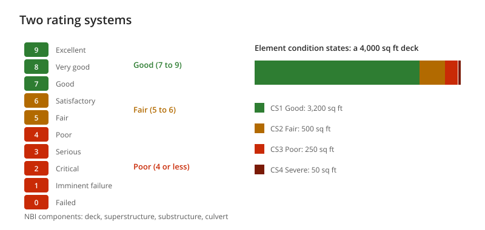

Condition ratings: NBI 0 to 9 and element condition states
In one sentence: U.S. bridges carry two kinds of rating: a 0-to-9 number for each major component, and condition states 1 to 4 for quantities of each element, and the second is what maintenance plans are built on.

Component ratings (0 to 9)
The National Bridge Inventory rates the deck, superstructure, substructure and culvert on a scale of 0 to 9:
| Rating | Meaning |
|---|---|
| 9 | Excellent |
| 8 | Very good |
| 7 | Good |
| 6 | Satisfactory: minor deterioration |
| 5 | Fair: minor section loss, cracking, spalling or scour |
| 4 | Poor: advanced section loss, deterioration, spalling or scour |
| 3 | Serious: section loss, deterioration or scour seriously affecting primary members |
| 2 | Critical: advanced deterioration; may need closing until corrected |
| 1 | Imminent failure: major deterioration; closed to traffic, corrective action may restore light service |
| 0 | Failed: out of service, beyond corrective action |
A bridge whose lowest component rating is 4 or less is classified in poor condition; 5 or 6, fair; 7 or more, good. Poor and fair condition also limit how long the inspection interval can be (see The National Bridge Inspection Standards).
Element condition states (1 to 4)
Element-level inspection, from the AASHTO Manual for Bridge Element Inspection, breaks the bridge into elements (deck, girders, bearings, joints, columns and so on) and records how much of each element is in each state:
- CS1 Good: no or minor defects.
- CS2 Fair: moderate defects, no effect on strength.
- CS3 Poor: defects that need attention.
- CS4 Severe: defects that may affect strength or serviceability; a structural review may be needed.
For example, a deck of 4,000 square feet might be recorded as 3,200 in CS1, 500 in CS2, 250 in CS3 and 50 in CS4.
New data specifications
The Specifications for the National Bridge Inventory (SNBI), adopted with the 2022 NBIS update, replace the old coding guide, with data collection under the SNBI starting in 2026 through a transition period. Item names and codes change; the idea of rating stays.
Using the ratings
Component ratings drive federal performance measures and inspection intervals. Element quantities show what to repair and how much, and are the basis for deterioration models in bridge management systems.
Common mistakes
- Giving a component a rating that its element quantities don't support.
- Recording a whole element in one condition state when only part of it has the defect.